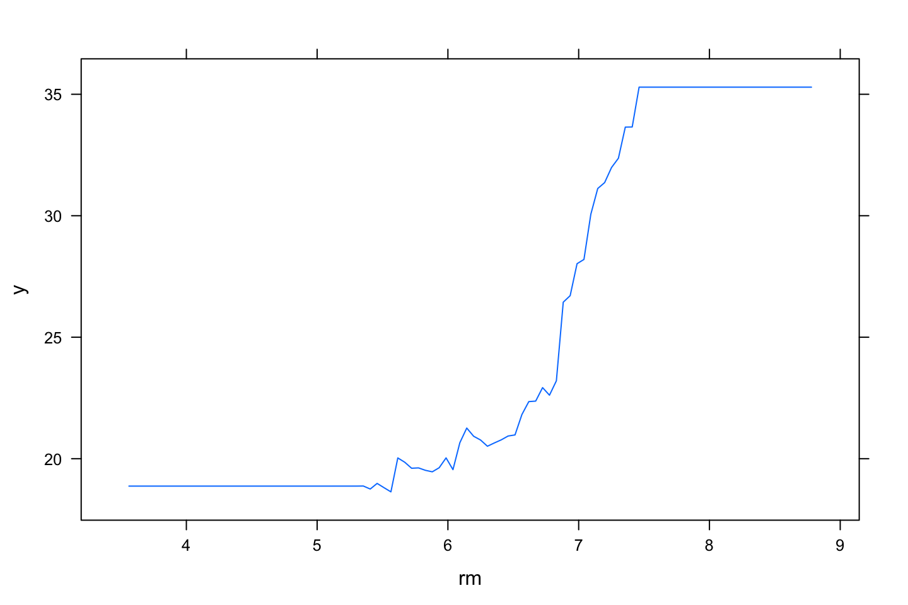
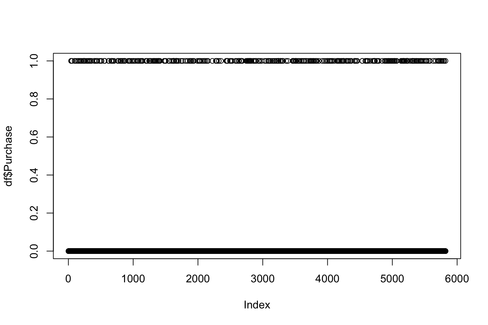

3 Tree Based Methods
In its essence the tree based methods are decisions trees, which is a set of splitting rules, which can be drawn as a tree, hence the name - decision tree.
We have three types of trees:
- Regression trees
- Classification trees
- Ensemble methods of trees, e.g., bagging, random forests and boosting
In its initial form, the decision tree is typically not competitive with non linear models and shrinkage methods prediction wise. Although the decision trees can be improve through:
- Bagging
- Random forests
- Boosting
Those above are ensemble methods of trees, those above are controlled with hyper-parameters that counterfeits overfitting
The methods above yields several decision trees, which yields a single consensus prediction. We see that combining a large number of trees improves prediction power greatly but also decrease the interpretability.
3.1 The Basics of Decision Trees
The decision trees can be applied both for regression and classification. The following sections will firstly be about regression and then classification. A decision tree looks like the following:
Figure 3.1: Decision Tree
We see that the illustration has 2 internal nodes - years < 4.5 and hits < 117.5 – and 3 terminal nodes (i.e. leaf/leaves). The leaves consist of the mean of the response given the criterias in the decision tree. The lines connecting the nodes (internal and terminal) are called branches.
Notice, that the same variables can occurs several times in the tree.
Each leaf can also be written as:
- \(R_1=\){X|Years<4.5}
- \(R_2=\){X|Years>=4.5,Hits<117.5}
- \(R_2=\){X|Years>=4.5,HIts>=117.5}
Terminology:
- Root: best predictor
- Splitting: This is when we do the splitting on the internal nodes / decision node
- Leaf: The leafs contain the mean or the mode of the respons from the observations which meet the circumstances that are set in the splits.
3.1.1 Regression Trees
We can take an example:

Figure 3.2: Decision Tree Hitters data
Note: based on the hitters data.
We see that the observations has been separated into regions which meet the criteria, one can then take the mean of the response variable of the observations in the regions to define the terminal nodes. This may be a simplification although, it is easily interpreted.
It should also be mentioned that the criteria, also shown in previous section, indicate that we are working with hard boundaries, hence the regions does not overlap with each other.
3.1.1.1 How to make the decision trees
Precedure:
- Divide the predictor space into regions, as in the example above. We end up with J dostinct and non overlapping regions, we call these \(R_1,R_2,...,R_J\)
- For all observations in region \(R_J\), we take the mean of the response variable.
Notice, that the way of optimizing RSS is with an approach starting on one varaible and then spreading out. We call this the recursive binary splitting, that is a top-down approach which is said to be greedy. In the very initial phase of the splitting procedure, all observations are in the same region, and then we start splitting up the regions, figure 3.3 show examples of having a more complex model and also including the mean of the response variable in the illustration.
Notice the top left illustration, this is not from a recursive binary splitting process, hence it yields more strange regions.
3.1.1.1.1 The goal of regression
We want to minimize the RSS. That can be written as:
\[\begin{equation} \text{}\sum_{j=1}^J\sum_{i\ \in R_j}^{ }\left(y_i-\hat{y}_{R_j}\right)^{^2} \tag{3.1} \end{equation}\]
Where:
- \(J\) = total number of regions
- \(j\) = spefic number of regions in the range of 1 to J
- \(R_j\) = each region, R for region i guess.
- \(i \in R_J\) = the special e sign, means member ship off. Hence it can be seen as a filter on the specific regions.
- \(\hat{y}_{R_j}\) = The predicted values in the specific regions, i.e. the mean response
So what it says is that we take the sum of all squeard residuals. But then how do we split the regions? In general terms in can be written as the following:
\[\begin{equation} R_1\left(j,s\right)=\left\{X|X_j<s\right\}\ AND\ R_2\left(j,s\right)=\left\{X|X_j\ge s\right\} \tag{3.2} \end{equation}\]
Where:
- \(s\) = cutpoint
- \(j\) = reflectsion the regions, hence,
- \(X_j\) = the x variable region.
- \((X|X_j<s)\) = the region of predictor space in which \(X_j\) takes o a value less than s (the cutpoint)
Thus in general terms we wish to select j and s that minimize the RSS, therefore we can also write the equation for RSS in general terms with:
\[\begin{equation} \sum_{i:\ e_i\in R_1\left(j,s\right)}^{ }\left(y_i-\hat{y}_{R_1}\right)^{^2}+\sum_{i:\ e_i\in R_2\left(j,s\right)}^{ }\left(y_i-\hat{y}_{R_2}\right)^{^2} \tag{3.2} \end{equation}\]
Where:
- \(R_1(j,s)\) define the training observations, which are a basis for \(\hat{y}_{R_1}\)
Adding third dimension - response variable:
Basically software can quite quickly compute cutpoints of the x variables to optimize RSS. The example above in 3.2 express two dimensions, one could also have added the response variable as a dimension. Where the fitted y (mean of response in region \(R_j\)) will express the hight in the specifc region.
Adding more cutpoints:
Naturally we could also have hadded more cutpoints, to separate the regions even further. See an example in the following:
Figure 3.3: Decision Tree Hitters data
Note: the top left show regions that is not from the procedure listed above, namely the recusive binary splitting
3.1.1.1.2 Tree Pruning & Algoritm
The more regions that you add, the more complexity and hence flexibilty. Thus, sometimes it is a good idea to have rather simple trees, to avoid fitting too much to specific observations. Also I recon, that in regions with few observations we are prone to overfitting in the specific regions.
Considerations on making a stable tree
One can perhaps add nodes until you don’t lower RSS, like forward selection, although sometimes a significant improvement of the model may come after a certain cutpoint, hence that is not a good approach.
A better approach is the opposite, where we start with making a huge tree (this we call \(T_0\)) and cuts it down a subtree (merely cutting branches off). To do so, one can do cost complexity pruning, i.e. weakest link pruning. To do so we introduce \(\alpha\), which is a nonnegative tuning parameter. This can be compared with backward selection. See examples:
\(\alpha\) behaves in the following way:
- If \(\alpha\) = 0, then the subtree = \(T_0\), hence the big tree and therefore controls the complexity of the model
- As \(\alpha\) increases we prune \(T_0\) into a subtree.
Thus the higher the tuning parameter, the smaller the tree. This can be compared with the lasso (Hastie et al. 2013). Thus, for each \(\alpha\) there corresponds a subtree of \(T_0\), i.e. \(T \subset T_0\). This can be written as:
\[\begin{equation} \sum_{m=1}^{\left|T\right|}\sum_{i:\ x_i\in R_m}^{ }\left(y_{i\ }-\hat{y}_{R_m}\right)^{^{2\ }}+\ \alpha\left|T\right| \tag{3.3} \end{equation}\]
Where:
- \(|T|\) = the number of terminal nodes of the tree \(T,R_m\) (the subset of predictor space)
Therefore we can write the procedure for building a regression tree with:
- Use recursive binary splitting to grow a large tree on the training data, stopping only when each terminal node has fwer than some minumum number of observations (to avoid overfitting). See an example of T0 in figure 3.4
- Apply cost complexity pruning to the large tree in order to obtain a sequence of best subtrees, as a function of \(\alpha\)
- Use K-fold cross validation to choose \(\alpha\). That is, divide the training observation into K-folds. For each \(k=1,...,K\): Where we do the following:
- Repat steps 1 and 2 on all but the kth fold of the training data
- Evaluate the mena squared prediction error in the left-out kth fold, as a function of \(\alpha\). Average the results for each value of alpha and pick alpha to minimuzze the average error.
- Return the subtree from step 2 that corresponds to the chosen value of \(\alpha\).
- It may be advantagous to plot the pruning process to actually see how the removed branches improve the model and select a subtree of reason instead of being blinded by the absolute lowest prediction error, see an example hereof in figure 3.5

Figure 3.4: T0 Hitters
We see the big tree, that can be pruned to optimize prediction, the following illustration plots MSE using different tuning parameters
Figure 3.5: Tree Pruning Hitters
We see that the lowest train and CV MSE is at the tree size of 10, although between three terminal nodes and 10 terminal nodes appear to be equally good, hence we go for the most parsimonious model, see that tree in figure 3.1
3.1.1.1.3 Setting contrains of the tree sise
An alternative to tree pruning is contraining the size of the tree. That can be done with four approaches:
- Maximum depth of the tree (vertical depth) - tuned using CV
- Minimum observations for a node split - tuned using CV
- Minimum observations for a terminal node (lead) - lower values for inbalanced classes
- Maximum number of terminal nodes - can be defined instead of depth.
3.1.2 Classification Trees
The procedure is very much the same as what we saw for regression trees, where the same pruning process etc. In the classification setting we predict qualitative outcomes, e.g., yes/no. We can either select based on frequency (i.e. most commonly occuring i.e. mode) or the proportions.
In classification we use error rate instead of RSS, as we can’t do RSS in a classification setting. I guess we can construct a confusion matrix as well.
We introduce a new term: node purity. This is about including internal nodes that leads to two terminal nodes which has the same conclusion. It will not reduce the classification error, it does improve the certainty of the classification. Therefore, to account for the certainty and thus the node purity, one should also make the Gini Index and the Entropy, equations can be found in Hastie et al. (2013), p. 312.
More on purity: as we classify based on the mode of the response variable, we intentionally misclassify some observations. Naturally, we want to avoid this. Thus we can increase purity, that is often seen by splitting the same variable consecutive times or just several times. Hence to circle in the actual classifications. Although, doing this too much leads to overfitting to the data. That is why the Gini and Entropy adds a penalty to the in-sample error and thus accounting for purity. But one should also make an out of sample validation
Thus the splits are made to optimize the Gini, Entropy or perhaps Chi-Squared.
If we want to write it in math, we can do the following:
\[y = f(x_1,x_2)\]
Where we see that y is a function of \(x_1\) and \(x_2\)
3.1.3 Tree vs. Lienar Models
One is never strictlu better than the other. But in general, one should start with a simple model, such as linear regression, to have a baseline, which we can compare more advanced mdoels with.
If the actual varaince of the response variable can be explained by linear regression, then it is likely to outperform a tree model, but if one experience more complex data, then it is likely that the tree model will outperform the linear model.
3.1.4 Advantages and Disadvantages of Trees
This is compared to classical approaches, linear regression and classification Hastie et al. (2013), CH3 and CH 4.
Advantges:
- Trees are very easy to explain to people. And also easy to visualize and understand.
- Some argues that decision trees better mimiic human reasoning and decision making.
- Can be shown graphically
- One don’t have to construct dummy variables.
- Simple and useful for interpretation
- No need to transform features
- Less cleaning required and not so sensible to outliers
- No need to transform features
- No assumptions, purely data driven
- Capturing interactions between features
- Ensemble trees compete with neural networks in terms of predictions
- Useful in data exploration and feature selection
Disadvantages:
- Trees is typically outperformed by more advanced methods, included in Hastie et al. (2013).
- Trees are not robust and small changes in the data may lead to big changes in the model.
- It is easy to overfit the data, hence high variance and low bias. This is dealt with by using the ensemble approach, hereunder, bagging, random forests and boosting.
Although decision trees can be advanced with:
- Bagging
- Random Forests
- Boosting
To improve prediction power and therefore compete with other advanced models.
3.2 Bagging, Random Forests, Boosting
These are merely building blocks to improve the prediction power.
3.2.1 Bagging (Bootstrap Aggregation)
We want to reduce the variance, and thus the instability of the model, by training the decision tree on different training data. To solve this without requiring a huge amount of data, we introduce bootstrapping. We then have the following procedure:
- Sample from the train data B times
- Train the model, making B amount of models, can be written as \(\hat{f}^{*b}(x)\) a. Notice that we didn’t prune the tree, that is intentional.
- Make predictions
- Average the predictions - these are the final predictions. Hence we obtain:
\[\begin{equation} \hat{y}_{bag}(x) = 1/B*\sum_{b=1}^{B}\hat{f}^{*b}(x) \tag{3.4} \end{equation}\]
We have therefore created B amount of models, that are each very flexible. But altogether we they create a consensus that acts like the principle estimation of the crowds. Therefore, by including B amount of models we avoid overfitting.
In a classification setting, it is very common to classify based on the majority vote.
Terms:
- OOB = out-of-bag. These are observations that are not included in the bagging process.
- OOB Error Estimation: This is an estimation of the CV error on the test data.
3.2.2 Random Forests
Illustrate the scenario of a clear ranking in the importance of the predictor variables, then the bagging method will almost everytime end up with the same trees, perhaps with different cutpoints, but in general, the trees are similar. This countereffects the reduction of variability that we are trying to impose.
With random forests we force the model only to select a subset of the predictors to avoid constructing trees that are very much alike, due to the independent selection. Thus, each time the algorithm considers a split, it is only able to choose among a random sample of m predictors among all of the p predictors. Notice, that we are still bagging the data.
The rule of thumb is \(p/3\) that is a part of the variables that are randomly considered and \(\sqrt{p}\) for classification.
By doings so, we are able to construct more different trees, that yields a far more stable model and also preserves the same prediction power through the bagging and hence averaging the consensus of each tree. Therefore, we don’t have the same risk of overfitting as we have seen previously and e.g., the case with boosting.
3.2.3 Boosting (i.e. Gradient Boosting)
Note, boosting is a general approach, that can be applied to many statistical learning methods
The whole idea, is that we can construct one model and based on the residuals hereof, we can construct a new tree which is fitted to the residuals on the prior model. Therefore, the boosting method allows for learning. To control the learning we have three different tuning parameters:
- B = the number of trees. As we constantly improve the model, by fitting to the residuals, we are now able to overfit the training data by iterating too much.
- \(\lambda\) = the shrinkage parameter. This is a small positive number. It controls at which rate the boosting works. Often the smaller lambda the higher does B need to be.
- d = number of d splits (d for depth). This controls the complexity of the boosted ensemble. Note: often \(d = 1\) works very well, this is a stump with only one split. The higher the d, the more interactions between the variables will be reflected. Although, the reason that d = 1 works well, is that each tree accounts for previous trees.
See the procedure on Hastie et al. (2013), p. 323.
Notice, boosting in classification is a bit different and more complex, the details hereof are omitted in the book
3.3 XGBoost
This is very similar to boosting as in the previous section. It has the following properties:
- More efficient than normal boosting
- Inspired by Adaboosting and normal gradient boosting
- Handels both continious and qualitative variables
- Avoids overfitting through regularization
The idea and the evolution of xgboost shortly explained:
- Boosting (sequentially building new classifiers using weights basing on outcomes of the previous ones)
- Adaboost (ARCing, improving a predictor using iterative reweighting of incorrectly classified cases) –>
- Boosted trees (each model in a chain of predictor corrects mistakes of the previous one) –>
- Gradient Boosting (+ greedy optimization with gradient descent) –>
- eXtreme Gradient Boosting (+ regularization to prevent overfitting + an efficient implementation)
The tuning parameters are:
- Number of Boosting Iterations (nrounds, numeric) - length of chain
- Max Tree Depth (max_depth, numeric) - depth of a tree (default: 6, typical: 3-10)
- Shrinkage (eta, numeric) - reducing contribution of subsequent models by shrinking the weights (default: 0.3, typical: 0.01-0.2)
- Minimum Loss Reduction (gamma, numeric) - spliting nodes only when the split gives positive reduction in the loss function (default: 0)
- Subsample Ratio of Columns (colsample_bytree, numeric) - fraction of columns to be sampled randomly for each of the trees (default: 1, typical: 0.5-1)
- Minimum Sum of Instance Weight (min_child_weight, numeric) - minimum sum of weight for a child node; protects overfit (default: 1)
- Subsample Percentage (subsample, numeric) - fraction of observations to be sampled randomly for each of the trees (default: 1, typical: 0.5-1)
3.4 Application in R
3.4.1 Decision trees
- In library
tree- Use
tree(DV~IV,data = ...)
- Use
- In library
rpart- Use
rpart(DV~IV,daata = ...) - Note, this has better visualization
- Use
- Check summary using
summary() - Plot the tree using
plot() - Use
predict()and evaluate the test error of the unpruned tree - Evaluate optimal level of tree complexity using
cv.tree() - Prune the tree with
prune.misclass()/prune.tree() - Use
predict()and evaluate the test error of the pruned tree
Interpreting summary()
We want to look at:
- Variables actually used in the tree construction, to see what variables that are in there
- Number of terminal nodes: count of the leafs
- Residual mean deviance: that is the error
- We also have distribution of the errors.
Interpreting the cv.tree() object
We see following:
+ Size, amount of leaves
+ Deviance, that is the error. Where we want to find the model with the lowes deciance
+ We can get the alpha by calling $k on the cv.tree() model.
Interpreting the prdict() object
Here we find the predictions.
3.4.2 Bagging
- Un library
randomFores`` + UserandomForest(DV~IV,mtry = p,ntree = …,importance = TRUE) - Use
predict()evalutae the test error - Use
ìmportance()to see the importance of each variable - Use
varImpPlot()to plot the importance of each variable
Interpreteing importance()
We get two coloumns:
- %IncMSE: each of the numbers is the mean decrease in accuracy of prediction (i.e. increase error). Hence if we exclude a specific variable from the model we can read how much the error will increase.
- IncNodePurity: This is a measure of total increase of node purity by splitting over the specific variable.
Hence both coloumns return information about how the variables impact the performance of the model.
This can also be Plotted
3.4.3 Random Forests
- Un library
randomForest`` + UserandomForest(DV~IV,mtry = p,ntree = …,importance = TRUE)- For RF of regression tree default mtry = p/3
- FOr RF of classification tree fedault mtry = \(\sqrt{p}\)
- Use
ìmportance()to see the importance of each variable - Use
varImpPlot()to plot the importance of each variable
We see that this is basically the same as bagging, merely where mtry is different, as we define how many variables that should be randomly considered.
Interpretation of the variable importance is the same as in bagging.
3.4.4 Boosting
- In library
gbm- Use
gm(DF~IV,shrinkage = ,n.trees = ,interaction.depth = ,) - We have to define the distribution, in exercise 8, she used Bernoulli
- Use
- Use
summary()to see the relative influence of the variables - Use
plot()to produce partial dependence plot for each variable - Use
predict()to evaluate the test error
Interpreting summary()
We get two columns:
- var: that is the variable
- Rel. inf: that is the relative influence: We see the highest values are the variables with the highest relationship with the
We are also abe to plot the relationship between an X variable and the y, that is done with plot(<boost.model>,i = "the variable")
Interpreting predict()
we have to define:
- Trained boosting model
- The test data
- The amount of trees, that is with n.trees
- If classification, then type = “response.” Thus, one get probabilities.
- If type is not = “class,” then we get the odds. We are interested in the probability, hence we must use type = “response”
3.4.5 XGBoost
See the XGBoost file.
3.5 Lab section
3.5.1 Fitting Classification Trees
library(tree)We want to use the carseats data, where sales = Unit sales (in thousands) at each location. We want to predict whether they sold more or less than 8.000, i.e. 8 as the variable is encoded in thousands.
library(ISLR)
df <- Carseats
High <- ifelse(df$Sales <= 8,"No","Yes")Merging the vector and the data set.
df <- data.frame(Carseats,High)
df$High <- as.factor(df$High)We now want to predict the High variable.
tree.carseats <- tree(formula = High ~ . - Sales
,data = df)
summary(tree.carseats)##
## Classification tree:
## tree(formula = High ~ . - Sales, data = df)
## Variables actually used in tree construction:
## [1] "ShelveLoc" "Price" "Income" "CompPrice" "Population"
## [6] "Advertising" "Age" "US"
## Number of terminal nodes: 27
## Residual mean deviance: 0.4575 = 170.7 / 373
## Misclassification error rate: 0.09 = 36 / 400- We see the variables that are included
- We see that there are 27 terminal nodes
- Information about the error (deviance) and the missclassification rate = 9%
The deviance reported is from the calculation:
\[\begin{equation} -2\sum_m\sum_kn_{mk}log\hat{p}_{mk} \tag{3.5} \end{equation}\]
Where:
- \(n_{mk}\) = the number of observations in the mth terminal node, that belong to the kth class.
A small deviance = low error, hence a good fit to the train data.
Thus similar to the RSS calculation that we have seen earlier.
we find the residual mean deviance to be:
\[\begin{equation} \frac{Deviance}{n-|T_0|} \tag{3.6} \end{equation}\]
Hence
\[\frac{170.7}{(400-27)}=373\]
Where \(T_0\) is the unpruned tree, which we see is with 27 terminal nodes. And \(n\) is merely the amount of observations.
PLotting the tree:
plot(tree.carseats)
text(tree.carseats
,pretty = 0)We see that the tree. Notice on the right side, we see that price occurs twice. This is probably due to purity and more certainty on the predictions.
We see that Shelve Location Bad and Medium appear to be the best predictor. As we start out with that variable.
tree.carseats[1] #Added [1] to get it in a table## $frame
## var n dev yval splits.cutleft splits.cutright yprob.No
## 1 ShelveLoc 400 541.486837 No :ac :b 0.59000000
## 2 Price 315 390.591685 No <92.5 >92.5 0.68888889
## 4 Income 46 56.534305 Yes <57 >57 0.30434783
## 8 CompPrice 10 12.217286 No <110.5 >110.5 0.70000000
## 16 <leaf> 5 0.000000 No 1.00000000
## 17 <leaf> 5 6.730117 Yes 0.40000000
## 9 Population 36 35.467463 Yes <207.5 >207.5 0.19444444
## 18 <leaf> 16 21.170024 Yes 0.37500000
## 19 <leaf> 20 7.940610 Yes 0.05000000
## 5 Advertising 269 299.758669 No <13.5 >13.5 0.75464684
## 10 CompPrice 224 213.232590 No <124.5 >124.5 0.81696429
## 20 Price 96 44.887998 No <106.5 >106.5 0.93750000
## 40 Population 38 33.148337 No <177 >177 0.84210526
## 80 Income 12 16.300638 No <60.5 >60.5 0.58333333
## 160 <leaf> 6 0.000000 No 1.00000000
## 161 <leaf> 6 5.406735 Yes 0.16666667
## 81 <leaf> 26 8.477229 No 0.96153846
## 41 <leaf> 58 0.000000 No 1.00000000
## 21 Price 128 150.181878 No <122.5 >122.5 0.72656250
## 42 ShelveLoc 51 70.681403 Yes :a :c 0.49019608
## 84 <leaf> 11 6.701994 No 0.90909091
## 85 Price 40 52.925059 Yes <109.5 >109.5 0.37500000
## 170 <leaf> 16 7.481333 Yes 0.06250000
## 171 Age 24 32.601277 No <49.5 >49.5 0.58333333
## 342 <leaf> 13 16.048286 Yes 0.30769231
## 343 <leaf> 11 6.701994 No 0.90909091
## 43 CompPrice 77 55.542945 No <147.5 >147.5 0.88311688
## 86 <leaf> 58 17.399411 No 0.96551724
## 87 Price 19 25.008180 No <147 >147 0.63157895
## 174 CompPrice 12 16.300638 Yes <152.5 >152.5 0.41666667
## 348 <leaf> 7 5.741628 Yes 0.14285714
## 349 <leaf> 5 5.004024 No 0.80000000
## 175 <leaf> 7 0.000000 No 1.00000000
## 11 Age 45 61.826542 Yes <54.5 >54.5 0.44444444
## 22 CompPrice 25 25.020121 Yes <130.5 >130.5 0.20000000
## 44 Income 14 18.249184 Yes <100 >100 0.35714286
## 88 <leaf> 9 12.365308 No 0.55555556
## 89 <leaf> 5 0.000000 Yes 0.00000000
## 45 <leaf> 11 0.000000 Yes 0.00000000
## 23 CompPrice 20 22.493406 No <122.5 >122.5 0.75000000
## 46 <leaf> 10 0.000000 No 1.00000000
## 47 Price 10 13.862944 No <125 >125 0.50000000
## 94 <leaf> 5 0.000000 Yes 0.00000000
## 95 <leaf> 5 0.000000 No 1.00000000
## 3 Price 85 90.327606 Yes <135 >135 0.22352941
## 6 US 68 49.260636 Yes :a :b 0.11764706
## 12 Price 17 22.074444 Yes <109 >109 0.35294118
## 24 <leaf> 8 0.000000 Yes 0.00000000
## 25 <leaf> 9 11.457255 No 0.66666667
## 13 <leaf> 51 16.875237 Yes 0.03921569
## 7 Income 17 22.074444 No <46 >46 0.64705882
## 14 <leaf> 6 0.000000 No 1.00000000
## 15 <leaf> 11 15.158203 Yes 0.45454545
## yprob.Yes
## 1 0.41000000
## 2 0.31111111
## 4 0.69565217
## 8 0.30000000
## 16 0.00000000
## 17 0.60000000
## 9 0.80555556
## 18 0.62500000
## 19 0.95000000
## 5 0.24535316
## 10 0.18303571
## 20 0.06250000
## 40 0.15789474
## 80 0.41666667
## 160 0.00000000
## 161 0.83333333
## 81 0.03846154
## 41 0.00000000
## 21 0.27343750
## 42 0.50980392
## 84 0.09090909
## 85 0.62500000
## 170 0.93750000
## 171 0.41666667
## 342 0.69230769
## 343 0.09090909
## 43 0.11688312
## 86 0.03448276
## 87 0.36842105
## 174 0.58333333
## 348 0.85714286
## 349 0.20000000
## 175 0.00000000
## 11 0.55555556
## 22 0.80000000
## 44 0.64285714
## 88 0.44444444
## 89 1.00000000
## 45 1.00000000
## 23 0.25000000
## 46 0.00000000
## 47 0.50000000
## 94 1.00000000
## 95 0.00000000
## 3 0.77647059
## 6 0.88235294
## 12 0.64705882
## 24 1.00000000
## 25 0.33333333
## 13 0.96078431
## 7 0.35294118
## 14 0.00000000
## 15 0.54545455We are able to see the following from the print:
- Variable
- Criterion
- Observations in the criterion, i.e. branch
- The deviance
- The overall prediction for the branch
- The fraction of observations in that branch that take on values 1 and 0 (Y/N).
We also see that branches that leads to a terminal node is marked with an "*".
Notice, that the ShelveLoc Says a and c for cut left. That is because the categories are not ordered. We can inspect the order with contrasts()
contrasts(df$ShelveLoc)## Good Medium
## Bad 0 0
## Good 1 0
## Medium 0 1Where it is ranked, bad, good, medium. Perhaps it could have been ordered correctly. But it does not matter when we are working with a decision tree, as it is purely data driven.
Using test and train data
set.seed(2)
index <- sample(1:nrow(df),size = 200)
df.train <- df[index,]
df.test <- df[-index,]
tree.carseats <- tree(High ~ . - Sales,data = df.train)
tree.pred <- predict(tree.carseats,newdata = df.test,type = "class")
library(caret)
confusionMatrix(data = tree.pred,reference = df.test$High,positive = "Yes")## Confusion Matrix and Statistics
##
## Reference
## Prediction No Yes
## No 104 33
## Yes 13 50
##
## Accuracy : 0.77
## 95% CI : (0.7054, 0.8264)
## No Information Rate : 0.585
## P-Value [Acc > NIR] : 0.00000002938
##
## Kappa : 0.5091
##
## Mcnemar's Test P-Value : 0.005088
##
## Sensitivity : 0.6024
## Specificity : 0.8889
## Pos Pred Value : 0.7937
## Neg Pred Value : 0.7591
## Prevalence : 0.4150
## Detection Rate : 0.2500
## Detection Prevalence : 0.3150
## Balanced Accuracy : 0.7456
##
## 'Positive' Class : Yes
## We see a sensitivity of 60% and specificity of 88%
Pruning the tree
It is likely that we are able to improve the model by pruning the tree. That is performed in the following.
set.seed(1337)
cv.carseats <- cv.tree(object = tree.carseats
,FUN = prune.misclass) # we are pruning to optimize against misclassifications
#Listing objects in the cv.carseats
names(cv.carseats)## [1] "size" "dev" "k" "method"
#Retrieving informaiton in the object
cv.carseats## $size
## [1] 21 19 14 9 8 5 3 2 1
##
## $dev
## [1] 69 70 69 67 68 71 72 81 81
##
## $k
## [1] -Inf 0.0 1.0 1.4 2.0 3.0 4.0 9.0 18.0
##
## $method
## [1] "misclass"
##
## attr(,"class")
## [1] "prune" "tree.sequence"Size: This is the size of the subtrees created
dev: The cross-validation error rate in this instance. We want to select the tree that yields the lowest error rate, that appear to be tree no. 4 with 9 terminal nodes.
k: Recall that we prune trees based on the tuning parameter \(\alpha\), see equation (3.3). This is corresponding to k.
par(mfrow = c(1,2))
plot(x = cv.carseats$size,y = cv.carseats$dev,type = "b")
plot(x = cv.carseats$k,y = cv.carseats$dev,type = "b")
We new apply the prune.misclass() function in order to prune the tree to obtain the nine-node tree.
prune.carseats <- prune.misclass(tree.carseats
,best = 9) #We want to inspect a tree of size 9
par(mfrow = c(1,1))
{plot(prune.carseats)
text(prune.carseats,pretty = 0)}tree.pred <- predict(object = prune.carseats,newdata = df.test,type = "class")
confusionMatrix(tree.pred,reference = df.test$High,positive = "Yes")## Confusion Matrix and Statistics
##
## Reference
## Prediction No Yes
## No 97 25
## Yes 20 58
##
## Accuracy : 0.775
## 95% CI : (0.7108, 0.8309)
## No Information Rate : 0.585
## P-Value [Acc > NIR] : 0.00000001206
##
## Kappa : 0.5325
##
## Mcnemar's Test P-Value : 0.551
##
## Sensitivity : 0.6988
## Specificity : 0.8291
## Pos Pred Value : 0.7436
## Neg Pred Value : 0.7951
## Prevalence : 0.4150
## Detection Rate : 0.2900
## Detection Prevalence : 0.3900
## Balanced Accuracy : 0.7639
##
## 'Positive' Class : Yes
## We see that we have both improved the sensitivity to 69.9% and the specificity to 82.9% from respectively 60% and 88%.
The overall accuracy is 77.5%.
We can show the accuracy of other trees as well. But these will perform worse.
prune.carseats <- prune.misclass(tree.carseats,best = 15)
{plot(prune.carseats)
text(prune.carseats,pretty = 0)}
tree.pred <- predict(object = prune.carseats,newdata = df.test,type = "class")
#Confusion matrix
confusionMatrix(data = tree.pred,reference = df.test$High,positive = "Yes")## Confusion Matrix and Statistics
##
## Reference
## Prediction No Yes
## No 102 30
## Yes 15 53
##
## Accuracy : 0.775
## 95% CI : (0.7108, 0.8309)
## No Information Rate : 0.585
## P-Value [Acc > NIR] : 0.00000001206
##
## Kappa : 0.5241
##
## Mcnemar's Test P-Value : 0.03689
##
## Sensitivity : 0.6386
## Specificity : 0.8718
## Pos Pred Value : 0.7794
## Neg Pred Value : 0.7727
## Prevalence : 0.4150
## Detection Rate : 0.2650
## Detection Prevalence : 0.3400
## Balanced Accuracy : 0.7552
##
## 'Positive' Class : Yes
## We see that the overall accuracy is actually the same, but the sensitivity and specificity is worse.
3.5.2 Fitting Regression Trees
We use the Boston data set.
library(MASS)
set.seed(1)
df <- Boston
index <- sample(x = nrow(df),size = nrow(df)/2)
df.train <- df[index,]
df.test <- df[-index,]
tree.boston <- tree(medv ~ .,data = df.train)
summary(tree.boston)##
## Regression tree:
## tree(formula = medv ~ ., data = df.train)
## Variables actually used in tree construction:
## [1] "rm" "lstat" "crim" "age"
## Number of terminal nodes: 7
## Residual mean deviance: 10.38 = 2555 / 246
## Distribution of residuals:
## Min. 1st Qu. Median Mean 3rd Qu. Max.
## -10.1800 -1.7770 -0.1775 0.0000 1.9230 16.5800For the interpretation hereof, i refer to section 3.5.1. But notice, that we are now wirking with a continous response variable, hence deviance = RSS, also found equation (3.1).
We can now plot the tree.
{plot(tree.boston)
text(tree.boston,pretty = 0)}
Recall that the Y variable is median value of owner-occupied homes in $1000s. We see that the predicted median house price is 45,380 when the amount of rooms are over 7.5.
Let us now use cross validation to see whether pruning the tree will improve the model.
cv.boston <- cv.tree(tree.boston)
plot(x = cv.boston$size,y = cv.boston$dev,type = "b")
We see that as the tree size increases. This in this case it does not appear to improve the model with pruning the tree.
However, let us say, that we know that we want to prune the tree. Then we can do the following:
prune.boston <- prune.tree(tree = tree.boston,best = 5) #5 terminal nodes
{plot(prune.boston)
text(prune.boston,pretty = 0)}tree.pred <- predict(object = tree.boston,newdata = df.train)
{plot(tree.pred,df.test$medv)
abline(a = 0,b = 1)}
mean((tree.pred - df.test$medv)^2)## [1] 153.5446We see an MSE of 153.5.
3.5.3 Bagging and Random Forests
Notice that bagging and random forests are basically the same. Where random forests merely tweak the bagging trees with a random selection of IV, instead of the model always being able to select all models. Therefore, it can also be said that \(m = p\), and thus the same function can be applied to both bagging and random forests.
3.5.3.1 Bagging
library(MASS)
df <- Boston
index <- sample(x = nrow(df),size = nrow(df)/2)
df.train <- df[index,]
df.test <- df[-index,]library(randomForest)
set.seed(1)
bag.boston <- randomForest(medv ~ .,data = df.train,mtry = 13,importance = TRUE)
bag.boston##
## Call:
## randomForest(formula = medv ~ ., data = df.train, mtry = 13, importance = TRUE)
## Type of random forest: regression
## Number of trees: 500
## No. of variables tried at each split: 13
##
## Mean of squared residuals: 14.45243
## % Var explained: 81.83We see that we have constructed 500 trees and tried 13 (all) variables at each split.
bag.pred <- predict(object = bag.boston,newdata = df.test)
plot(x = bag.pred,y = df.test$medv)
abline(0,1)mean((bag.pred-df.test$medv)^2) #MSE## [1] 19.81565We see that the MSE is 19.8 which is an immense improvement.
Notice, that we also have specified how many trees we want to grow:
set.seed(1)
bag.boston <- randomForest(medv ~ .,data = df.train,mtry = 13,ntrees = 25,importance = TRUE)
bag.pred <- predict(object = bag.boston,newdata = df.test)
mean((bag.pred-df.test$medv)^2) #MSE## [1] 19.81565We see that the MSE is a bit higher than before. That is also intuitively correct, although with bagging we are actually also at risk of overfitting the data by growing too many trees, as it is likely that the trees are similar. To overcome this risk, we can grow a random forest instead, that is done in the following.
3.5.3.2 Random Forest
We use the same procedure except that we use fewer variables under evaluation. By default R follows a rule of thumb with \(\frac{p}{3}\) for regression and \(\sqrt{p}\) for classification. In this example, we use 6 variables.
set.seed(1)
rf.boston <- randomForest(medv ~ .,data = df.train,mtry = 6,importance = TRUE)
rf.pred <- predict(object = rf.boston,newdata = df.test)
mean((rf.pred-df.test$medv)^2) #MSE## [1] 16.4081Now we see that the model is even better, with MSE of 16.4.
We can use importance() to interprete the variables.
importance(rf.boston)## %IncMSE IncNodePurity
## crim 13.732304 1107.67668
## zn 4.410510 95.63934
## indus 5.670870 443.23264
## chas 1.353168 39.59940
## nox 16.662050 923.03154
## rm 33.368987 7865.44385
## age 13.600352 626.64334
## dis 11.469812 765.61445
## rad 4.417249 108.77438
## tax 9.424190 550.22440
## ptratio 13.150528 1353.27803
## black 7.213603 310.30963
## lstat 25.921218 5666.64169We see that rm (rooms pr. dwelling) has the highest influence on the model performance, and we see by removing this variable, the error increase by 32.3.
We also see that rm leads to the highest purity impact.
Notice, that these metrics are based on the train data.
The data above can also be plotted with.
varImpPlot(rf.boston)
Where we see that the varaibles are ranked according to the metrics.
3.5.4 Boosting
Recall that this model initially fits a tree to the data and then afterwards fits consecutive models to the residuals of that model. This is why it is also called gradient boosting.
library(gbm)
set.seed(1)
boost.boston <- gbm(medv ~ .
,data = df.train
,distribution = "gaussian" #Since it is regression
,n.trees = 5000
,interaction.depth = 4
) #Lambda is by default = 0.001
summary(boost.boston)
| var | rel.inf | |
|---|---|---|
| rm | rm | 35.8641661 |
| lstat | lstat | 33.1527531 |
| dis | dis | 5.9907969 |
| nox | nox | 4.8861341 |
| crim | crim | 4.5736239 |
| age | age | 4.2570248 |
| ptratio | ptratio | 4.2345152 |
| black | black | 3.5107293 |
| tax | tax | 1.7363601 |
| rad | rad | 0.8599312 |
| indus | indus | 0.7808803 |
| chas | chas | 0.0800761 |
| zn | zn | 0.0730089 |
We see that the model ranks relative influence, which is also plotted. Again we see that rm is the most important variable. lstat is also noticable.
We can plot partial dependence plots for these variables.
plot(boost.boston,i.var = "rm")
plot(boost.boston,i.var = "lstat")We can now predict medv for the test data.
boost.pred <- predict(object = boost.boston
,newdata = df.test
,n.trees = 5000 #Notice that we specify amount of trees
)
mean((boost.pred-df.test$medv)^2) ## [1] 14.63457We see that the MSE is lowered further by 14.6.
We can also fit a tree that has another tuning parameter, hence it is learning faster.
boost.boston <- gbm(medv ~ .
,data = df.train
,distribution = "gaussian"
,n.trees = 5000
,interaction.depth = 4
,shrinkage = 0.2 #Lambda, tuning parameter
,verbose = FALSE #If = T, then it plots the progress
)
boost.pred <- predict(boost.boston
,newdata = df.test
,n.trees = 5000)
mean((boost.pred-df.test$medv)^2)## [1] 17.22542We see that the MSE is 17.22, with lambda = standard value of 0.001, hence it is not learning as fast.
3.6 Exercies
3.6.1 Exercise 7 - Decision Tree Assessment
library(randomForest)
set.seed(1337)
library(MASS)
df <- Boston
index <- sample(x = nrow(df),size = nrow(df)/2)
df.train <- df[index,]
df.test <- df[-index,]
# Iterating number of trees
MSE.in <- rep(0,length(seq(from = 5,to = 500,by = 5)))
MSE.out <- rep(0,length(seq(from = 5,to = 500,by = 5)))
idx <- 0
for (B in seq(from = 5,to = 500,by = 5)) {
print(B)
idx <- idx + 1
rf.boston <- randomForest(medv ~ .,data = df.train,ntree = B,mtry = 6,importance = TRUE)
rf.pred <- predict(object = rf.boston,newdata = df.test)
MSE.in[idx] <- mean((rf.boston$predicted-df.train$medv)^2) #MSE
MSE.out[idx] <- mean((rf.pred-df.test$medv)^2) #MSE
}plot(MSE.out,type = "l",col = 'darkred',xlab = "Number of trees",ylab = "MSE")
lines(rf.boston$mse,type = "l",col = 'limegreen')
grid()
legend("topright",legend = c("Out","In"),lty = c(1,1),col = c('darkred',"limegreen"))NOTICE; due to the OOB, it is not rare to see in sample error that is greater than the out of sample error.
library(doParallel)
CoreCount <- makePSOCKcluster(detectCores()-1)
registerDoParallel(CoreCount)
# Iterating number of trees and parameters under evaluation
MSE.1 <- rep(0,length(seq(from = 5,to = 500,by = 5)))
MSE.2 <- rep(0,length(seq(from = 5,to = 500,by = 5)))
MSE.3 <- rep(0,length(seq(from = 5,to = 500,by = 5)))
p <- length(df)-1
p2 <- p/2
sqrtp <- sqrt(p) #Notice that randomForest will automatically round
idx <- 0
for (B in seq(from = 5,to = 500,by = 5)) {
print(B)
idx <- idx + 1
rf.boston <- randomForest(medv ~ .,data = df.train,ntree = B,mtry = p,importance = TRUE)
rf.pred <- predict(object = rf.boston,newdata = df.test)
MSE.1[idx] <- mean((rf.pred-df.test$medv)^2) #MSE
rf.boston <- randomForest(medv ~ .,data = df.train,ntree = B,mtry = p2,importance = TRUE)
rf.pred <- predict(object = rf.boston,newdata = df.test)
MSE.2[idx] <- mean((rf.pred-df.test$medv)^2) #MSE
rf.boston <- randomForest(medv ~ .,data = df.train,ntree = B,mtry = sqrtp,importance = TRUE)
rf.pred <- predict(object = rf.boston,newdata = df.test)
MSE.3[idx] <- mean((rf.pred-df.test$medv)^2) #MSE
}
stopCluster(CoreCount)
registerDoSEQ()plot(MSE.1,type = "l",col = 'darkred',ylim = c(8,12))
lines(MSE.2,type = "l",col = 'limegreen')
lines(MSE.3,type = "l",col = 'coral')
grid()
legend("topright",legend = c("m = p","m = p/2","m = sqrt(p)"),lty = c(1,1,1),col = c('darkred',"limegreen","coral"))rm(list = ls())3.6.2 Exercise 8 - DT/RF/Boosting
(a) splitting the data
df <- Carseats
set.seed(123)
index <- sample(1:nrow(df),size = nrow(df)*0.75)
df.train <- df[index,]
df.test <- df[-index,]
rm(index)(b) fitting a regression tree and plotting
library(tree)
fit.tree <- tree(Sales ~ .,data = df.train)
plot(fit.tree) ; text(fit.tree,pretty = 0)We see the fitted values above. The values a each terminal node represent the mean value of y given the different splits.
library(dplyr)
mse.test.t0 <- mean((predict(object = fit.tree,newdata = df.test) - df.test$Sales)^2)
mse.test.t0## [1] 3.893676We see that the mean squared error = 4.06
(c) Pruning the tree
We must do the following:
- Assess how big the tree should be. Done through cross validation
- Fit the pruned tree.
- Predict and calculate MSE
set.seed(123)
fit.cv.tree <- cv.tree(object = fit.tree)
plot(x = fit.cv.tree$size,y = fit.cv.tree$dev,type = "l",col = "darkblue",xlab = "Tree size",ylab = "Deviance",main = "CV Tree")
abline(h = min(fit.cv.tree$dev),col = "darkred",lty = 2)
grid()fit.cv.tree$size[which.min(fit.cv.tree$dev)]## [1] 8With a seed of 123, we see that the best tree size appear to be best 8.
fit.tree.prune <- prune.tree(tree = fit.tree
,best = fit.cv.tree$size[which.min(fit.cv.tree$dev)])
mse.test.t1 <- mean((predict(object = fit.tree.prune,newdata = df.test) - df.test$Sales)^2)
mse.test.t1## [1] 4.516324So we see that the MSE appear to be worse after pruning.
(d) Using bagging
library(randomForest)
set.seed(123)
fit.bag <- randomForest(Sales ~ .
,data = df.train
,mtry = length(df.train)-1 #Merely identifies the amount of predictors
,importance = TRUE
,ntree = 500 #This is also the default value
)
mse.test.bag <- mean((predict(object = fit.bag,newdata = df.test) - df.test$Sales)^2)
mse.test.bag## [1] 2.253202We see that the MSE is now 2.25. Which is much better than previously.
importance(fit.bag)## %IncMSE IncNodePurity
## CompPrice 37.1354164 281.825832
## Income 10.1378593 128.955945
## Advertising 21.5736372 151.157032
## Population -0.1362661 71.539003
## Price 72.3036488 698.000814
## ShelveLoc 77.3615535 736.724942
## Age 20.2693017 187.902438
## Education 1.9415069 68.272112
## Urban 0.4779681 10.140546
## US 0.5347757 8.054079varImpPlot(fit.bag)We see that the most important variables are ShelveLocation and Price, that was also what we saw in the trees earlier, where it started with the shelve location.
We notice that the Population is actually inverse, hence by removing it, it appears that the MSE will improve slightly.
(e) Random Forest
library(randomForest)
set.seed(123)
fit.rf <- randomForest(Sales ~ .
,data = df.train
,mtry = length(df.train)/3 #Merely identifies the amount of predictors / 3
,importance = TRUE
,ntree = 500 #This is the default value
)
mse.test.rf <- mean((predict(object = fit.rf,newdata = df.test) - df.test$Sales)^2)
mse.test.rf## [1] 2.549939We see that the test MSE is in fact higher than the bagging model.
importance(fit.rf)## %IncMSE IncNodePurity
## CompPrice 22.8640496 243.17255
## Income 8.7362027 168.34606
## Advertising 18.2804426 181.31384
## Population 0.9108472 117.37501
## Price 51.3986491 591.42959
## ShelveLoc 54.3842439 598.76271
## Age 18.8119973 259.15144
## Education 3.2342193 94.47983
## Urban 1.8279348 17.25155
## US 2.3714796 18.45708varImpPlot(fit.rf)Again we see that the shelve location and price are the mosts important variables just as when we were doing bagging.
Summary
rbind(mse.test.t0
,mse.test.t1
,mse.test.bag
,mse.test.rf
)## [,1]
## mse.test.t0 3.893676
## mse.test.t1 4.516324
## mse.test.bag 2.253202
## mse.test.rf 2.5499393.6.3 Exercise 9 - Decision Tree / Pruning
(a) loading the data
library(ISLR)
df <- OJ
set.seed(123)
index <- sample(1:nrow(df),size = 800)
df.train <- df[index,]
df.test <- df[-index,]
rm(index)(b) fitting a tree to the train data
library(tree)
set.seed(1337)
fit.tree <- tree(Purchase ~ .,data = df.train)
summary(fit.tree)##
## Classification tree:
## tree(formula = Purchase ~ ., data = df.train)
## Variables actually used in tree construction:
## [1] "LoyalCH" "PriceDiff"
## Number of terminal nodes: 8
## Residual mean deviance: 0.7625 = 603.9 / 792
## Misclassification error rate: 0.165 = 132 / 800We see that the size of the tree is 8 terminal nodes. Where the error rate is 16.5% hence an accuracy is 83.5%.
contrasts(df.train$Purchase)## MM
## CH 0
## MM 1We see that MM is the positive result. Hence we can check the null rate of the data.
table(df.train$Purchase)[2]/sum(table(df.train$Purchase))## MM
## 0.39125We see that if we predicted all purchases to be MM, then we would roughly have an accuracy of 40%. Hence the tree is far superior to the null model.
(c) Interpreting results for a node
fit.tree[1]## $frame
## var n dev yval splits.cutleft splits.cutright yprob.CH
## 1 LoyalCH 800 1070.88631 CH <0.5036 >0.5036 0.60875000
## 2 LoyalCH 350 415.06732 MM <0.276142 >0.276142 0.28000000
## 4 LoyalCH 170 130.99077 MM <0.0356415 >0.0356415 0.12941176
## 8 <leaf> 56 10.03274 MM 0.01785714
## 9 <leaf> 114 108.91980 MM 0.18421053
## 5 PriceDiff 180 245.15969 MM <0.05 >0.05 0.42222222
## 10 <leaf> 74 74.61071 MM 0.20270270
## 11 <leaf> 106 144.52285 CH 0.57547170
## 3 PriceDiff 450 357.13148 CH <-0.39 >-0.39 0.86444444
## 6 <leaf> 27 32.81544 MM 0.29629630
## 7 LoyalCH 423 273.69949 CH <0.705326 >0.705326 0.90070922
## 14 PriceDiff 130 135.46105 CH <0.145 >0.145 0.78461538
## 28 <leaf> 43 58.46604 CH 0.58139535
## 29 <leaf> 87 62.07028 CH 0.88505747
## 15 <leaf> 293 112.47137 CH 0.95221843
## yprob.MM
## 1 0.39125000
## 2 0.72000000
## 4 0.87058824
## 8 0.98214286
## 9 0.81578947
## 5 0.57777778
## 10 0.79729730
## 11 0.42452830
## 3 0.13555556
## 6 0.70370370
## 7 0.09929078
## 14 0.21538462
## 28 0.41860465
## 29 0.11494253
## 15 0.04778157We see the 8 leafs (terminal nodes) and their probabilities for CH and MM. E.g., leaf no. 15 is almost always CH (95%), as out of the 293 observations that meet the conditions. Hence the purity of the leaf is rather high.
We have more indecisive nodes, such as leaf no. 11, where 57% are CH and 43% are MM.
(d) Creating a plot of the tree
We create the plot with the rpart package in stead, which can produce a nicer plot.
library(rattle)
set.seed(1337)
fit.tree <- rpart::rpart(Purchase ~ .,data = df.train)
fancyRpartPlot(model = fit.tree)We see that the tone of the color reflects the purity of the leads, where e.g., we have a node with 100% CH and 0% MM, although it only contain 1% of the overall data. But it is certainly pure. But perhaps it is overfitted?
(e) Predicting the test data
preds.tree <- predict(object = fit.tree,newdata = df.test,type = "class")
library(caret)
caret::confusionMatrix(data = preds.tree,df.test$Purchase)## Confusion Matrix and Statistics
##
## Reference
## Prediction CH MM
## CH 141 24
## MM 25 80
##
## Accuracy : 0.8185
## 95% CI : (0.7673, 0.8626)
## No Information Rate : 0.6148
## P-Value [Acc > NIR] : 3.407e-13
##
## Kappa : 0.6175
##
## Mcnemar's Test P-Value : 1
##
## Sensitivity : 0.8494
## Specificity : 0.7692
## Pos Pred Value : 0.8545
## Neg Pred Value : 0.7619
## Prevalence : 0.6148
## Detection Rate : 0.5222
## Detection Prevalence : 0.6111
## Balanced Accuracy : 0.8093
##
## 'Positive' Class : CH
## We see a sensitivity of 85% and specificity of 77%. The overall error rate = 18,15%, which is higher (as expected) than the in sample error.
(d) Apply the cv.tree() to select optimal tree size
set.seed(1337)
fit.tree <- tree(Purchase ~ .,data = df.train)
fit.cv.tree <- cv.tree(object = fit.tree,K = 10)The following plots both the deviance and the cost complexity in the same plot with double y axis’
par(mar = c(5, 4, 4, 4) + 0.3) #Additional space for second y-axis
#Plotting first series
plot(x = fit.cv.tree$size,y = fit.cv.tree$dev
,type = "l"
,col = "darkblue"
,ylab = ""
,xlab = "Size"
,main = "CV Tree Comparisons"
,sub = "A doubled axis interpretation"
)
#Adding y axis 1 name with colours
mtext("Deviance",side = 2,line = 3,col = "darkblue")
#Other details
abline(h = fit.cv.tree$dev[which.min(fit.cv.tree$dev)],col = "red",lty = 4)
#Adding a new plot on-top of the first
par(new = TRUE)
#Adding the second series accompanied by a new axis
plot(x = fit.cv.tree$size,y = fit.cv.tree$k,col = "darkred"
,type = "l"
,axes = FALSE,xlab = "",ylab = "" #We want to avoid creating axis' and names on-top of what we already have
,lty = 2
)
#Adding y axis 2 ticks and labels
axis(side = 4 #This is right, counting clockwise from the bottom
,at = pretty(range(fit.cv.tree$k[2:length(fit.cv.tree$k)])) #I remove the first obs, as it is -Inf, that is not workgin
)
#And axis name
mtext("Cost Complexity",side = 4,line = 3,col = "darkred")
#Other details
grid()
legend(x = "topright",legend = c("Deviance","TuningParam"),lty = 1:2,col = c("darkblue","darkred"),cex = 0.8)
Figure 3.6: CV Tree atttributes
We see that the optimal model appear to be of size 6. We could now train a pruned tree with 6 leaves. It is not done in this exercise.
(g) Plotting Misclassification rate (on train) against treesize
set.seed(1337)
mcr <- as.vector(0) #misclassification rate
idx <- 0
for (T in sort(fit.cv.tree$size,decreasing = FALSE)[-1]) { #The first is removed as apparantly we need at least two leaves
idx <- idx + 1
fit.tree.prune <- prune.misclass(tree = fit.tree,best = T)
preds.tree <- predict(object = fit.tree.prune,newdata = df.train,type = "class")
mcr[idx] <- (1-mean(preds.tree==df.train$Purchase))
}
plot(x = sort(fit.cv.tree$size,decreasing = FALSE)[-1]
,y = mcr,type = "l"
,xlab = "Size"
,ylab = "Misclassification rate"
,main = "Misclassification rate at different sizes"
)
grid()(h) Interpreting the plot above
We see that the model actually does not improve after a size of 4. Indicating that we should prune even more than previously discovered. That is a bit odd.
(i) Producing pruned tree
fit.tree.t4 <- prune.misclass(tree = fit.tree,best = 4)
preds.tree <- predict(object = fit.tree.t4,newdata = df.train,type = "class")
(1-mean(preds.tree==df.train$Purchase))## [1] 0.165We see a misclassification rate of 16.5% for the pruned tree, where \(T_0\) had a misclassification rate of 18.15%, which is higher than the pruned tree. Hence, we improved the model.
(j) comparing the results
We see that the pruned tree is performing better than the unpruned tree.
(k) Comparing test partition performance
{
preds.test.tree.t0 <- predict(object = fit.tree,newdata = df.test,type = "class")
preds.test.tree.t4 <- predict(object = fit.tree.t4,newdata = df.test,type = "class")
(1-mean(preds.test.tree.t0==df.test$Purchase)) %>% print()
(1-mean(preds.test.tree.t4==df.test$Purchase)) %>% print()
}## [1] 0.1851852
## [1] 0.1851852The models appear to perform equally good on the test partition. Hence we would prefer the pruned tree, as it is simpler, hence less flexibility.
3.6.4 Exercise 10 - Boosting/GAM/LinearReg/Bagging - Comparison
(a) Loading the data
library(ISLR)
df <- Hitters
sum(is.na(Hitters$Salary))## [1] 59We see that there are 59 observations without salary data. That we want to remove.
index <- is.na(Hitters$Salary)
df <- Hitters[!index,]
df$Salary <- log(df$Salary) #Log of the salaries(b) Creating a train data set
df.train <- df[1:200,]
df.test <- df[-1:-200,](c) Performing boosting
library(gbm)
B <- 1000
lambda <- seq(from = 0.001,to = 0.1,by = 0.00099)
idx <- 0
mse <- rep(0,length(lambda))
for (l in lambda) {
idx <- idx + 1
fit.boost <- gbm(Salary ~ .
,data = df.train
,n.trees = B
,distribution = "gaussian"
,shrinkage = l
)
mse[idx] <- mean((fit.boost$fit - df.train$Salary)^2)
}In the loop above we have tested the model with different lambda values. This hyper parameter adjusts how quick the model learns. We can now plot the MSE against the tuning parameter.
plot(x = lambda,y = mse,type = "l",main = "Shrinkage")
grid()We see as lambda increases, the MSE lowers. This makes sense, as the higher lambda, the quicker the model learns and the more it fits to the residuals of the previous model. It can often be seen as, the lower we have lambda the more models are required. As the model is fitted on the train data, it is also expected to perform better, as we gradually allow it to learn faster.
Notice, that the model is actually able to perfectly fit the train data
(d) Testing the model
B <- 1000
lambda <- seq(from = 0.001,to = 0.1,by = 0.00099)
idx <- 0
mse <- rep(0,length(lambda))
for (l in lambda) {
idx <- idx + 1
fit.boost <- gbm(Salary ~ .
,data = df.train
,n.trees = B
,distribution = "gaussian"
,shrinkage = l
)
preds.boost <- predict(object = fit.boost,newdata = df.test,n.trees = B)
mse[idx] <- mean((preds.boost - df.test$Salary)^2)
}Now we can plot this.
plot(x = lambda,y = mse,type = "l",main = "Shrinkage")
grid()Here we see that we have a minimum around a tuning parameter of 0.04, hence somewhere in the middle.
fit.boost <- gbm(Salary ~ .
,data = df.train
,n.trees = B
,distribution = "gaussian"
,shrinkage = lambda[which.min(mse)]
)
preds.boost <- predict(object = fit.boost,newdata = df.test,n.trees = B)
mse.boost <- mean((preds.boost - df.test$Salary)^2)(e) Comparing to regression
Linear regression
fit.lin <- lm(Salary ~ .,data = df.train)
preds.lin <- predict(object = fit.lin,newdata = df.test)
mse.lin <- mean((preds.lin - df.test$Salary)^2)We also choose a smoothing smoothing spline with the three most correlating variables, hence we construct a gam.
#Assessing correlation
correl <- cor(y = df.train$Salary,x = df.train[,-c(14,15,19,20)])
gam.df <- 2 #Tested different levels, and 2 appear to be the best
library(gam)
fit.gam <- gam(Salary ~ s(CRBI,gam.df) + s(CRuns,gam.df) + s(CHits,gam.df)
,data = df.train)
preds.gam <- predict(object = fit.gam,newdata = df.test)
mse.gam <- mean((preds.gam - df.test$Salary)^2)Comparison
setNames(as.data.frame(rbind(mse.boost,mse.lin,mse.gam)),nm = "MSE")| MSE | |
|---|---|
| mse.boost | 0.2538902 |
| mse.lin | 0.4917959 |
| mse.gam | 0.3129716 |
We see that boosting is the better model, then gam and lastly the linear model.
(f) Variable importance boosting model
summary(fit.boost)| var | rel.inf | |
|---|---|---|
| CAtBat | CAtBat | 15.0748709 |
| CHits | CHits | 12.1847777 |
| CWalks | CWalks | 8.4211213 |
| CRBI | CRBI | 8.3944209 |
| PutOuts | PutOuts | 7.8331550 |
| Years | Years | 6.6926906 |
| Walks | Walks | 5.7274660 |
| Hits | Hits | 5.4847269 |
| CHmRun | CHmRun | 5.1226050 |
| Assists | Assists | 5.1106103 |
| AtBat | AtBat | 4.3317039 |
| CRuns | CRuns | 3.8104777 |
| HmRun | HmRun | 3.6299786 |
| RBI | RBI | 2.8746393 |
| Runs | Runs | 2.1118339 |
| Errors | Errors | 1.9850110 |
| Division | Division | 0.4982340 |
| League | League | 0.3564011 |
| NewLeague | NewLeague | 0.3552757 |
We see that CAtBat is far more important than the other variables. That is interesting, as that was merely the variable with the fourth most correlation with y. We do infact see that this model yields an importance that is rather different from assessing correalation, as we normally would.
We can add that variable to the gam model, and see how it performs:
gam.df <- 2 #Tested different levels, and 2 appear to be the best
library(gam)
fit.gam <- gam(Salary ~ s(CRBI,gam.df) + s(CRuns,gam.df) + s(CHits,gam.df) + s(CAtBat,gam.df)
,data = df.train)
preds.gam <- predict(object = fit.gam,newdata = df.test)
mse.gam2 <- mean((preds.gam - df.test$Salary)^2)Now we see, that the model does improve, and gam is actually performing better than Boosting.
(g) Applying bagging
library(randomForest)
fit.bag <- randomForest(Salary ~ .,data = df.train
,mtry = length(df.train)-1) #No. of predictors
preds.bag <- predict(fit.bag,newdata = df.test)
mse.bag <- mean((preds.bag - df.test$Salary)^2)Comparison
setNames(as.data.frame(rbind(mse.boost
,mse.lin
,mse.gam
,mse.gam2
,mse.bag)),nm = "MSE")| MSE | |
|---|---|
| mse.boost | 0.2538902 |
| mse.lin | 0.4917959 |
| mse.gam | 0.3129716 |
| mse.gam2 | 0.2750028 |
| mse.bag | 0.2281286 |
We see that the bagging model is actually superior to all models.
3.6.5 Exercise 11 - Boosting
(a) Loading and partitioning
df <- Caravan
df$Purchase <- ifelse(df$Purchase == "Yes",yes = 1,no = 0)
df.train <- df[1:1000,]
df.test <- df[-1:-1000,](b) Boosting
plot(df$Purchase)
We see that the response vector is a binary vector. It is also listed as a factor.
fit.boost <- gbm(Purchase ~ .
,data = df.train
,n.trees = 1000
,shrinkage = 0.01
,distribution = "bernoulli" #Because we have binary outcome
)
summary(fit.boost)
| var | rel.inf | |
|---|---|---|
| PPERSAUT | PPERSAUT | 14.3295534 |
| MKOOPKLA | MKOOPKLA | 9.9736081 |
| MOPLHOOG | MOPLHOOG | 7.5872449 |
| MBERMIDD | MBERMIDD | 5.7808384 |
| PBRAND | PBRAND | 5.6205711 |
| MGODGE | MGODGE | 4.3738956 |
| ABRAND | ABRAND | 4.0703606 |
| MINK3045 | MINK3045 | 3.7510230 |
| MOSTYPE | MOSTYPE | 2.7040406 |
| MSKC | MSKC | 2.6133035 |
| MSKA | MSKA | 2.4577241 |
| PWAPART | PWAPART | 2.3120642 |
| MAUT1 | MAUT1 | 2.2603361 |
| MAUT2 | MAUT2 | 2.1396541 |
| MGODPR | MGODPR | 2.0178413 |
| MBERHOOG | MBERHOOG | 1.9200909 |
| MGODOV | MGODOV | 1.7982818 |
| PBYSTAND | PBYSTAND | 1.7594279 |
| MSKB1 | MSKB1 | 1.7450868 |
| MINKGEM | MINKGEM | 1.7126814 |
| MBERARBG | MBERARBG | 1.5861912 |
| MRELGE | MRELGE | 1.5142353 |
| MINK7512 | MINK7512 | 1.5015654 |
| MFWEKIND | MFWEKIND | 1.4075311 |
| MRELOV | MRELOV | 1.3362888 |
| APERSAUT | APERSAUT | 0.9343820 |
| MSKD | MSKD | 0.8297606 |
| MINKM30 | MINKM30 | 0.8041630 |
| MBERBOER | MBERBOER | 0.7576037 |
| MHHUUR | MHHUUR | 0.7320049 |
| MOSHOOFD | MOSHOOFD | 0.7028847 |
| MINK4575 | MINK4575 | 0.7028427 |
| MAUT0 | MAUT0 | 0.6648342 |
| MGODRK | MGODRK | 0.6249523 |
| MOPLMIDD | MOPLMIDD | 0.6170707 |
| MZPART | MZPART | 0.4735141 |
| PMOTSCO | PMOTSCO | 0.4727968 |
| MHKOOP | MHKOOP | 0.4639800 |
| MFGEKIND | MFGEKIND | 0.4436668 |
| MZFONDS | MZFONDS | 0.3718382 |
| PLEVEN | PLEVEN | 0.3357793 |
| MGEMLEEF | MGEMLEEF | 0.3116748 |
| MINK123M | MINK123M | 0.2425446 |
| MBERARBO | MBERARBO | 0.2302805 |
| MRELSA | MRELSA | 0.2213198 |
| MSKB2 | MSKB2 | 0.2203454 |
| MFALLEEN | MFALLEEN | 0.1905751 |
| MGEMOMV | MGEMOMV | 0.1364351 |
| MBERZELF | MBERZELF | 0.0660080 |
| MOPLLAAG | MOPLLAAG | 0.0634171 |
| PAANHANG | PAANHANG | 0.0565708 |
| MAANTHUI | MAANTHUI | 0.0553153 |
| PWABEDR | PWABEDR | 0.0000000 |
| PWALAND | PWALAND | 0.0000000 |
| PBESAUT | PBESAUT | 0.0000000 |
| PVRAAUT | PVRAAUT | 0.0000000 |
| PTRACTOR | PTRACTOR | 0.0000000 |
| PWERKT | PWERKT | 0.0000000 |
| PBROM | PBROM | 0.0000000 |
| PPERSONG | PPERSONG | 0.0000000 |
| PGEZONG | PGEZONG | 0.0000000 |
| PWAOREG | PWAOREG | 0.0000000 |
| PZEILPL | PZEILPL | 0.0000000 |
| PPLEZIER | PPLEZIER | 0.0000000 |
| PFIETS | PFIETS | 0.0000000 |
| PINBOED | PINBOED | 0.0000000 |
| AWAPART | AWAPART | 0.0000000 |
| AWABEDR | AWABEDR | 0.0000000 |
| AWALAND | AWALAND | 0.0000000 |
| ABESAUT | ABESAUT | 0.0000000 |
| AMOTSCO | AMOTSCO | 0.0000000 |
| AVRAAUT | AVRAAUT | 0.0000000 |
| AAANHANG | AAANHANG | 0.0000000 |
| ATRACTOR | ATRACTOR | 0.0000000 |
| AWERKT | AWERKT | 0.0000000 |
| ABROM | ABROM | 0.0000000 |
| ALEVEN | ALEVEN | 0.0000000 |
| APERSONG | APERSONG | 0.0000000 |
| AGEZONG | AGEZONG | 0.0000000 |
| AWAOREG | AWAOREG | 0.0000000 |
| AZEILPL | AZEILPL | 0.0000000 |
| APLEZIER | APLEZIER | 0.0000000 |
| AFIETS | AFIETS | 0.0000000 |
| AINBOED | AINBOED | 0.0000000 |
| ABYSTAND | ABYSTAND | 0.0000000 |
We see that PPERSAUT, MKOOPLKA and MOPLHOOG are specifically important wher the rest gradually decreases. We also see a lot of variables that are of no importance.
(d) Predicting posterior probabilities
probs.boost <- predict(object = fit.boost,newdata = df.test
,type = "response" #Response yields posterior probabilities
,n.trees = 1000)
preds.boost <- ifelse(probs.boost > 0.2,1,0)
confusionMatrix(data = as.factor(preds.boost)
,reference = as.factor(df.test$Purchase)
,positive = "1")## Confusion Matrix and Statistics
##
## Reference
## Prediction 0 1
## 0 4412 256
## 1 121 33
##
## Accuracy : 0.9218
## 95% CI : (0.9139, 0.9292)
## No Information Rate : 0.9401
## P-Value [Acc > NIR] : 1
##
## Kappa : 0.112
##
## Mcnemar's Test P-Value : 5.151e-12
##
## Sensitivity : 0.114187
## Specificity : 0.973307
## Pos Pred Value : 0.214286
## Neg Pred Value : 0.945159
## Prevalence : 0.059934
## Detection Rate : 0.006844
## Detection Prevalence : 0.031937
## Balanced Accuracy : 0.543747
##
## 'Positive' Class : 1
## We see that we have a high accuracy, but the sensitivity (true positive) is really low. We can check the null rate.
table(df.test$Purchase)[1]/sum(table(df.test$Purchase))## 0
## 0.9400664We see that the prior probability for 0 (no purchase) is 94%, hence if we predicted everyone to not buy, then the overall accuracy would be better, although the sensitivity would be 0.
We see that \(258+31 = 289\) and we predicted 31 to make a purchase. Hence we cought \(31/289*100=10.7%\), i.e., the sensitivity (true positive rate).
We can now try to use KNN to see how that performs.
#KNN
library(class)
#Constructing Model Matrix to remove y
mm.train <- model.matrix(Purchase ~ .,data = df.train)[,-1] #Removing intercept
mm.test <- model.matrix(Purchase ~ .,data = df.test)[,-1] #Removing intercept
#Making the predictions
knn.pred <- knn(train = mm.train
,test = mm.test
,cl = df.train$Purchase
,k = 2) #Tested a few, 2 appear to be best
#Confusion matrix
confusionMatrix(data = as.factor(knn.pred)
,reference = as.factor(df.test$Purchase)
,positive = "1")## Confusion Matrix and Statistics
##
## Reference
## Prediction 0 1
## 0 4275 266
## 1 258 23
##
## Accuracy : 0.8913
## 95% CI : (0.8822, 0.9)
## No Information Rate : 0.9401
## P-Value [Acc > NIR] : 1.0000
##
## Kappa : 0.023
##
## Mcnemar's Test P-Value : 0.7598
##
## Sensitivity : 0.07958
## Specificity : 0.94308
## Pos Pred Value : 0.08185
## Neg Pred Value : 0.94142
## Prevalence : 0.05993
## Detection Rate : 0.00477
## Detection Prevalence : 0.05827
## Balanced Accuracy : 0.51133
##
## 'Positive' Class : 1
## We see that the sensitivity is higher for the KNN model.
3.6.6 Exercise 12
Description
Apply boosting, bagging, and random forests to a data set of your choice. Be sure to fit the models on a training set and to evaluate their performance on a test set. How accurate are the results compared to simple methods like linear or logistic regression? Which of these approaches yields the best performance?
Not done